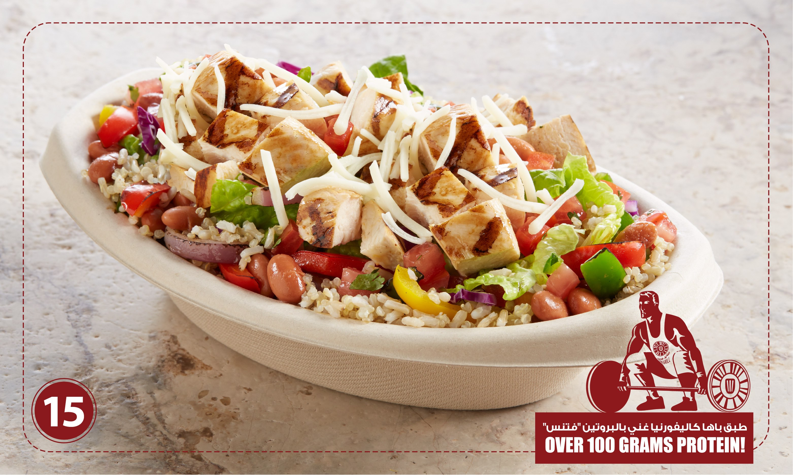
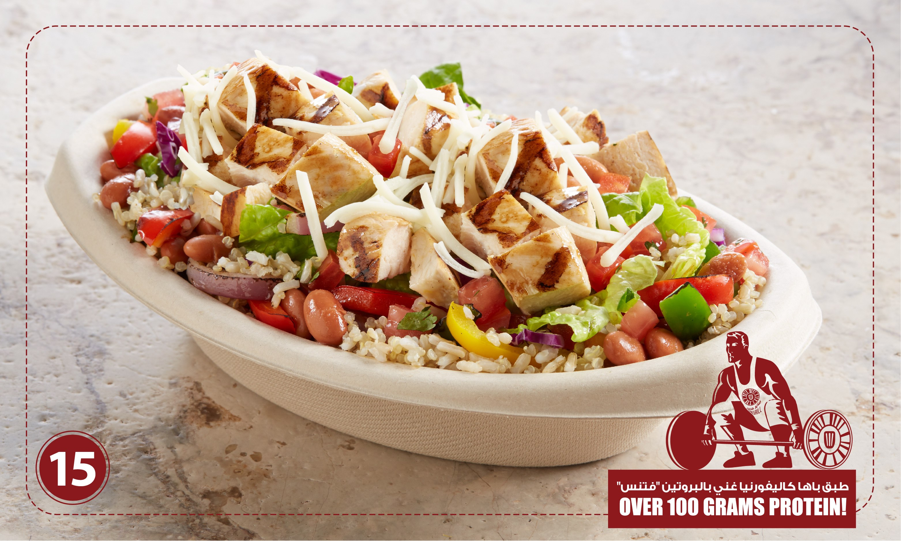
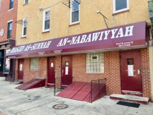
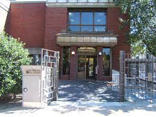

In 2010(or 2011, I forget), my family made the move from Philadelphia, PA to Ryadh, KSA, and while I won't lie and say that the adjustment period was difficult, I would be lying if I said it took a while before it truly felt like home. Not least of all because the friends we've made, all of which have become the people I call my best friends outside of my family, the time's we've played basketball, went to parks and beaches, these little indoor mall amusement parks, and going out somewhere to eat adter the Friday sermons. Not only that, but I've been introduced to so many wonderful foods such as fool and various other Middle-Eastern dishes. And Allah has blessed me to travel to both Mecca and Medina multiple times, making Umrah in the process, an experience that never fails to make me grateful for the gifts Allah has blessed me with. And of course, I can't forget the mosques at every corner, so I don't have to panic about missing a prayer when I'm out and about. Honestly, my time in Saudi Arabia has shaped so much of who I am today and I've made so many memories, it truly makes me happy beyond words that Allah blessed us to come to this country.
 

America; while I've since resolved to only return to the country in very certain, special occasions, I won't deny the good times I've had there. Firstly, the Germantown Masjid Commutiy; I can't begin to overstate how important the community is to me, being where I learned most of what I know about Islam today and where I've memorized the most Qur'an. I even got my first jobs there, first at the Cluck & Gills foodtruck(which is now a restaurant), and second at the Germantown Masjid Summer Camp, both fo which are unforgettable experiences. I also enjoyed visiting the Joseph E. Coleman Northwest Regional Library with my friend every Friday, where I discovered my love for a lot of books, and the time I spent with my family, whether it'd be traveling to Delaware with my grandmother(first mom's side), or going to the family reunions my grandmother(dad's side) organized. Again, while I would rather stay out of the country and would rather not visit again in the foreseeable future, it still holds a special place in my heart.
 